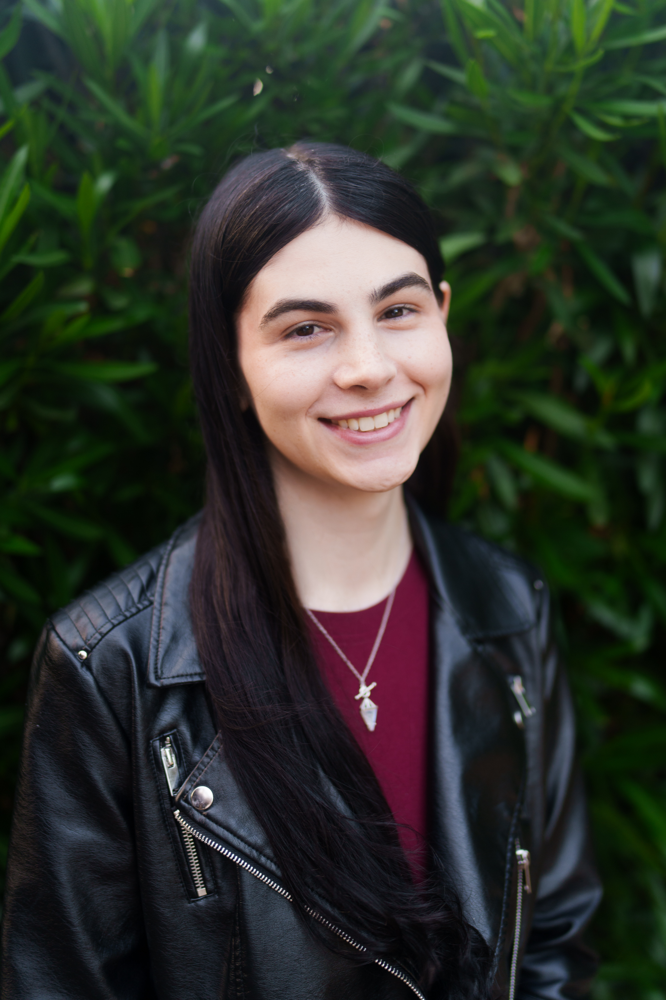
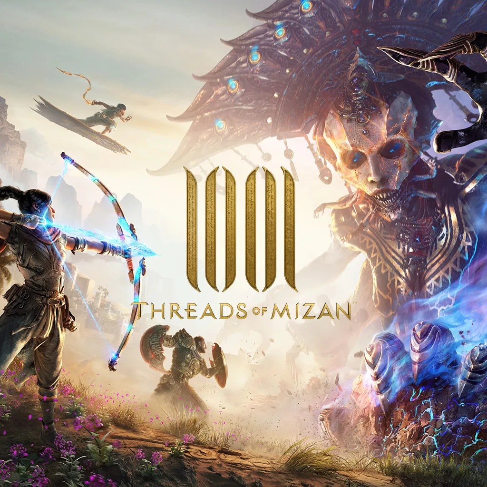
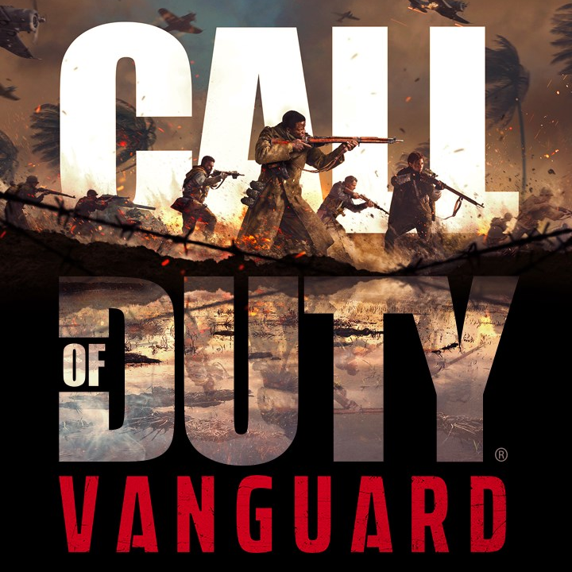
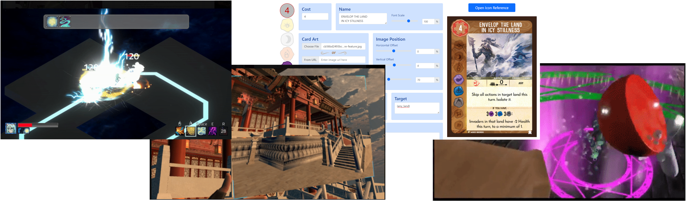

Hi, I’m Marina.
Five years of AAA game development. Seasoned gameplay engineer, strong design sense, excellent communicator. Players come first, always.
This website is still partially under construction...

MBC Game Studios & Free Range Games, 2022 - Present
I’ve been working on 1001: Threads of Mizan as a gameplay engineer, a multiplayer game built on Unreal Engine 5’s Gameplay Ability System. I focus on core combat and player characters (Hit reactions, melee combat, special abilities). I often fill a dual role as a designer, answering unsolved questions about combat and player progression.

Sledgehammer Games, 2020-2021
I worked on the single-player campaign for Call of Duty: Vanguard, the top-grossing game of 2021. I prototyped new player mechanics, updated systems for trains & flight, and triaged bugs across a scarcely documented codebase.
VMWare Office of the CTO, 2019
VR Developer Intern. I built an app that ran in both VR and AR to tutorialize server assembly, and demo’d it to hundreds of people at VMWorld 2019.
Stanford University, 2017-2022
B.S in Computer Science with a focus in Human-Computer Interaction
A Teamfight Tactics inspired single-player autobattler. Features 65 playable characters, 55 items, and 23 traits, all fully functional. Check out the demo!
Gameplay Demo Download HereOther projects
I've worked on a bunch of other things in the past, but this part of the website isn't ready yet!
